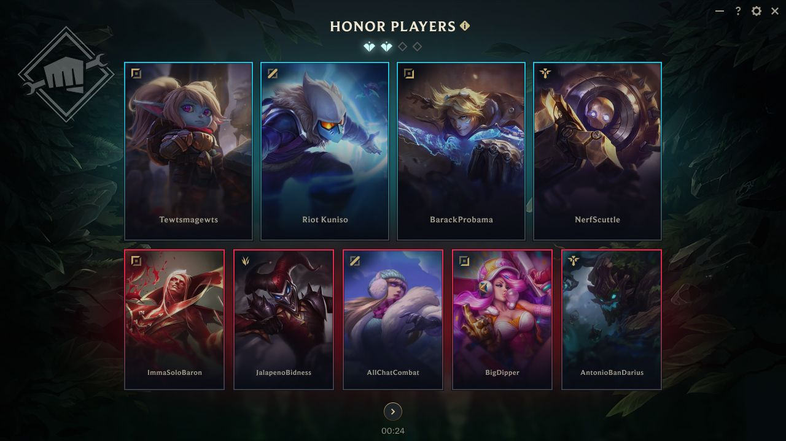

.png)
.png)
Tìm hiểu sâu về trang phục: tướng nào được nhận trang phục, với chủ đề gì và tại sao.
Đội Ngũ Phát Triển | 100 pc nuggets, Riot Hylia, Danika Li, Julian Futanto 22/8/2024
Chào các bạn, chúng tôi là Riot Revenancer & Riot Heronic từ nhóm Hệ Thống Hành Vi, hôm nay sẽ có mặt để trò chuyện cùng các bạn về Vinh Danh & Hệ Thống Hành Vi.
Năm nay, chúng tôi đã có một vài cải tiến cho hệ thống hành vi của LMHT để giúp khích lệ những người chơi có hành vi tốt. Và mặc dù chúng tôi hài lòng với kết quả cho đến hiện tại, vẫn còn nhiều việc mà chúng tôi cần cải tiến với hệ thống này. Giờ hãy nói về những thay đổi mà bạn có thể kỳ vọng cho đến hết năm nay.
Ở lần cập nhật năm 2017, chúng tôi đã có mục tiêu là tưởng thưởng những hành vi tốt theo một cách giúp khích lệ tinh thần đồng đội, điểm tập trung chính ở đây là tinh thần đồng đội. Trong hệ thống hiện tại, bạn có thể vinh danh cho 1 thành viên trong đội của mình, và thế là hết.
Việc này đã hạn chế khả năng vinh danh những người chơi có hành vi tốt, thay vào đó nó chủ yếu được sử dụng để công nhận đóng góp của những người chơi thi đấu tốt trong trận. Dù như vậy cũng ổn, nhưng chúng tôi muốn hệ thống vinh danh có thể phản ánh những hành vi tốt, chứ không chỉ thể hiện số trận bạn đã chơi và màn trình diễn của bạn trong những trận đấu đó.
Ngoài ra, phần thưởng hiện tại của hệ thống vinh danh không hẳn là "danh giá" cho lắm, và không nhận được phần thưởng mùa giải vì hành vi tiêu cực cũng không gây ảnh hưởng lớn như chúng tôi muốn.
Vậy nên chúng tôi sẽ có những thay đổi trong hệ thống để cho phép người chơi xác định và khích lệ những người chơi có hành vi/ứng xử tốt, chứ không chỉ những người chơi xuất sắc. Chúng tôi có kế hoạch dài hạn cho toàn hệ thống nói chung, nhưng thứ đầu tiên bạn sẽ thấy trong tháng 9 này đó là khả năng vinh danh nhiều hơn một người chơi mỗi trận cũng như khả năng vinh danh cho đối thủ.

Chúng tôi sẽ trở lại để chia sẻ thêm về những cập nhật hệ thống khi chúng đã sẵn sàng.
Một thứ khác mà chúng tôi đã tìm cách cải thiện đó là khắc phục những lối chơi quấy rối, trước đây khó để ngăn chặn: lối chơi tiêu cực hoặc "phá game mức độ nhẹ". LMHT là một trò chơi phức tạp và nhiều rủi ro khi thành công phụ thuộc rất nhiều vào hành động của một nhóm người (trong đa số tình huống) xa lạ. Với chúng tôi thì đây là công thức hoàn hảo cho sự thú vị và tính cạnh tranh, nhưng rất tiếc nó cũng là điều kiện hoàn hảo để người chơi chọc phá lẫn nhau hoặc cư xử tiêu cực trong lối chơi.
Trước khi nói về những điều mà chúng tôi sẽ làm, chúng tôi sẽ làm rõ định nghĩa của khái niệm này. Chúng tôi định nghĩa lối chơi tiêu cực là "những hành động có chủ đích nhằm làm giảm tỉ lệ chiến thắng của cả đội hoặc của một đồng đội".
Chủ đích là điểm mấu chốt ở đây, ai cũng có những trận đấu tồi tệ, cố gắng thử nghiệm Bard đường giữa không phải là tiêu cực khi đó là một chiến thuật bạn đã từng thành công trước đây, nhưng chọn Yuumi đường giữa chỉ vì bạn không thèm quan tâm thì có.
Các hình thức quấy rối rõ ràng hơn đã được chúng tôi phát hiện để xử lý, như lạm dụng chat, AFK hay cố tình chết. Hệ thống của chúng tôi không có một cách hiệu quả để phân biệt giữa người chơi có một trận đấu tồi tệ và một người cố tình "quăng game" bằng cách thi đấu không hết sức. Nhưng chúng tôi đang cố gắng để cải thiện điều này.
Cách đầu tiên để chúng tôi làm vậy đó là áp dụng những thay đổi rõ ràng cho hệ thống phát hiện đơn giản hiện tại. Nó sẽ giúp phát hiện những hành vi rõ ràng như bán đồ ở phút 20 hay chỉ mua Bùa Tiên hoặc dùng chiêu cuối ngay khi hồi chiêu mà không có tình huống gì đang xảy ra.
Thứ hai, chúng tôi sẽ cải thiện việc sử dụng dữ liệu tổng hợp để phân tích hành vi một cách tổng thể. Vậy nên, thay vì luôn luôn xử lý ngay khi phí phạm chiêu cuối lần đầu tiên, chúng tôi sẽ đánh giá cả những yếu tố khác như hành vi đáng ngờ trong trận này và những trận khác, tỉ lệ bị tố cáo, nội dung thể hiện ý định trong khung chat, v.v.
Hiện tại, chúng tôi đang có tỉ lệ phát hiện chính xác khoảng 70%, và nói một cách thẳng thắn, thì chúng tôi thấy rằng con số này là không thể chấp nhận được. Bằng cách áp dụng những thay đổi bên trên, chúng tôi có thể đạt tới độ chính xác cao hơn, cho phép chúng tôi phát hiện được thêm những tình huống "phá game mức độ nhẹ" (độ chính xác tối thiểu mà chúng tôi mong muốn là 95%).
Đây sẽ không thể là một hệ thống hoàn hảo, một hệ thống tự động sẽ không bao giờ có thể xác định tất cả mọi hành vi mà con người có thể phát hiện thông qua bối cảnh. Nhưng chúng tôi sẽ tiếp tục nỗ lực hết sức mình, và điểm mạnh của cách tiếp cận này đó là chúng tôi có thể làm từng phần bằng cách thêm hướng xử lý cho từng tình huống tiêu cực cụ thể.
Hiện tại chúng tôi vẫn đang ở trong giai đoạn thử nghiệm, đảm bảo rằng mọi thứ hoạt động một cách chính xác và hệ thống có thể phát hiện chính xác những hành vi gây rối mà không làm ảnh hưởng đến những người chơi vô tội. Chúng tôi sẽ dành thời gian cho quá trình này để đảm bảo mọi thứ được thực hiện đúng, nhưng các bạn có thể mong đợi những cập nhật thêm trong tương lai gần khi chúng tôi bắt đầu ra mắt.
Các bạn đã thấy những việc chúng tôi đã làm với hệ thống Bù Đắp Hành Vi Gây Rối đầu năm nay, và chúng tôi muốn chia sẻ một vài con số tính đến hiện tại.
Kể từ khi ra mắt, hệ thống Bù Đắp đã xử lý lại và đưa ra những vi phạm và phần thưởng sau:
| Số Vi Phạm Được Đền Bù | Số Phần Thưởng Đã Trao | |
|---|---|---|
| Số Lượt Đổ Xí Ngầu ARAM đã hoàn trả | 4.189.548 | 8.148.227 |
| Số trận Bảo Vệ Tự Chọn Tất Cả | 8.777.680 | 31.792.790 |
| Đền bù ĐNG | 105.723 | 374.302 |
| Số trận Tăng XP | 441.968 | 520.142 |
| Tổng cộng | 13.574.919 | 40.825.461 |
Chúng tôi sẽ tiếp tục có những thay đổi để giúp LMHT trở nên an toàn và vui vẻ hơn. Chúng tôi sẽ trở lại với những cập nhật cho hệ thống Vinh Danh và hệ thống chống lối chơi tiêu cực sau!